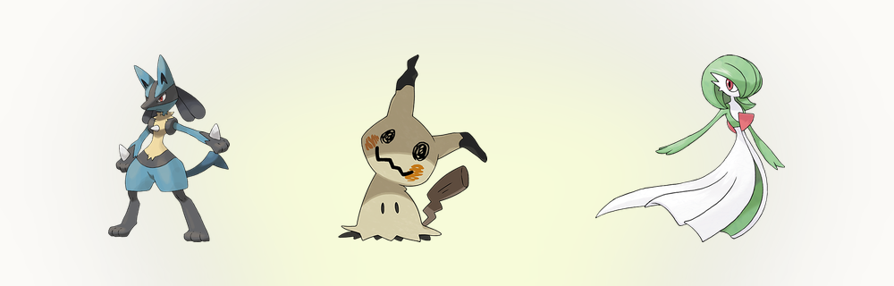
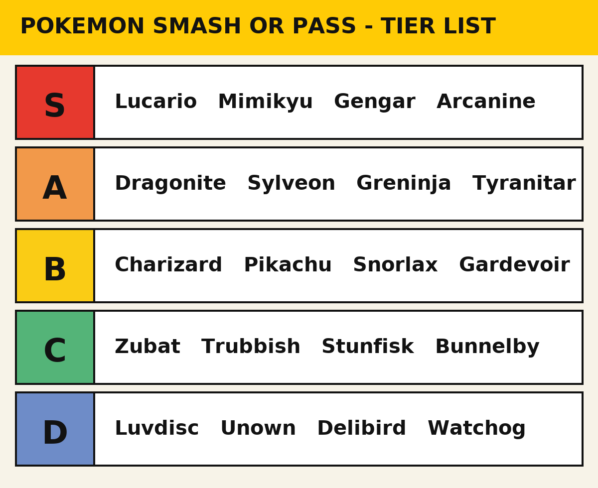

ポケモンの好みは誰でも明らかだと思っています。 Smash or Pass それが実際に突きつけられるまでは。リザードンなら迷わないでしょう。ところが次にダイノーズを出されて、自分には思想なんてなく、ノリしかないと気づきます。このリストは、その思想を作ろうとした試みです。1,025種の図鑑全体に使える判断基準で、以下で見られます。 PokemonDB 画像が読み込まれる前にスマッシュを決める相手から、天井を見上げてしまう相手まで。
コメント欄というものが存在するので、先に断っておきます。話しているのはデザインと愛嬌、そして画面に出てきたときの楽しさについてです。それ以上の意味はありません。
Sティア：即スマッシュ
ルカリオ。 波動の犬がスマブラの常連になったのには理由があります。線がすっきりしていて、タイプも良く、なぜか古代と未来が同時に感じられる。図鑑で一番迷いなくスマッシュできます。

ミミッキュ。 これには1段落使わせてください。ミミッキュは2016年、サン・ムーンにゴースト・フェアリーとして登場しました。設定のすべては、 Bulbapediaの図鑑ページにある通りです。ピカチュウのグッズがあふれる世界で、同じように愛されたくて手作りのピカチュウの着ぐるみを着ている、寂しがりな存在。子ども向けゲームの設定としては驚くほど暗く、デザインはそれを完璧に表現しています。殴り書きの顔、たれた首、その下にいる何かは一度も描かれたことがありません。アニメでは専用の歌まで作られ、着ぐるみのコスプレも定着しました。Sティアで決まりです。
ゲンガー。 29年ものあいだ新しいデザインが出続けて、この紫の悪党を超えたものはまだいません。 1996年から続く記録 は今も破られていません。壁の影からこちらを見て笑っています。もう言うことはありません。
ウインディ。 スマッシュ。次の質問をどうぞ。
Aティア：かなり肯定的
カイリュー。 最初の600族は、大きくて人懐こいドラゴンの郵便屋さんです。間の抜けた顔と、16時間で地球を一周できる性能のギャップが、私が求めていた一貫性そのものです。ハクリューのほうが美しいと誰もが知っているので、半段下げました。
ニンフィア。 最高のイーブイ進化です。リボン状の肉体の議論にも答えておきます。あれは触角です。かわいいです。以上。 ゲッコウガ。 舌をマフラーにしたカエルの忍者は、普通なら馬鹿げています。なのに実際は、歴代の御三家最終進化で最もかっこいいデザインです。2020年の公式 Pokemon of the Year ファン投票では、900近い候補の中から1位を取りました。カロス編のアニメは、ほぼ全部がこのポケモンの見せ場でした。 バンギラス。 怪獣です。本当に怪獣を作ってきました。迷う余地がありません。
Bティア：安定、でも熱狂はない
ここから議論が始まるティアです。 リザードン がここに入ります。タブを閉じる前にひとつ。リザードンはとても良いオレンジのドラゴンです。同時に、史上最も露出しすぎたポケモンでもあります。メガシンカ2種、キョダイマックス、PokemonDBにすべての姿が記録されていますそしてすべてのカードセットに常連として座り続け、その価格はゲームフリークの家賃を払っているかのようです。デザインはB、ブランドはS。平均すればそうなります。デザインではなく対戦での使いやすさで並べたいなら、 Smogonのティア はこのリストの半分に反対するはずです。
ピカチュウ も同じ扱いです。計り知れないほど象徴的ですが、デザインとしては丸い黄色のネズミです。 カビゴン は愛されていて、1998年に私の行く手を阻み、リメイクでもまた阻みました。以来ずっとその貯金で生きています。 サーナイト は優雅で、コンセプトとしても本当に面白い。ラルトス系が優美な守り手に育つ流れは、図鑑でも指折りのデザインの弧です。減点はただ一つ、インターネットのせいで普通に語れなくなったこと。心当たりがあるでしょう。

C・Dティア：友情が終わる場所
ズバット がCなのは、クロバットが一族の名誉を回復しているからです。基本形は、洞窟でエンカウントという形で払わされる税金です。 ヤブクロン はゴミ袋です。正直さには敬意を払いますが、だからといってスマッシュする義務はありません。ゲームフリークの誰かが明らかにこのポケモンを愛していて、進化形にはキョダイマックスまで付きました。ゴミ袋であることより、こちらのほうがよほど謎です。 ホルビー は、最初に捕まえて最初にボックスへ送るために存在しています。
そして マッギョには1段落使います。あの間抜けな顔が笑えたのはたった一度、11世代も前のことです。それ以来ずっと道路に平らに寝そべって、何か感じてみせろと言わんばかりです。何も感じません。Cティア、Dはさすがに酷だと思ったからです。
ここからが本当のDです。 ラブカス はピンクのハートで、主な役割はハートのウロコを持っていることでした。デザインの指示書が「持ち物入れ」だったポケモンです。 アンノーン は、同じ失望が28種類あるだけです。 デリバードの専用わざは相手を回復させることがあり、これだけで全部説明がつきます。そして ミルホッグ は、1番道路の店長を呼べと言い出しそうな顔をしています。
最も難しい5つの判断
どのプレイヤーもいずれここに来ます。直感と頭が別々の報告書を出す5つで、順番は適当です。順位を決めること自体が6つ目の難しい判断に感じられたからです。
ピカチュウ。 今も分かりません。毎回スマッシュして、どちらでも何も感じません。マスコットを評価するのは、意見というより事務作業に近いです。
イーブイ。 かわいいのは当然です。でもイーブイをスマッシュするのは、1つの進化形を選んで残り8匹を裏切るようなものです。たいていパスして、そのあと罪悪感を感じます。
サーナイト。 本当に優雅なデザインですが、インターネットの荷物を背負いすぎていて、自分がポケモンを見ているのか議論を見ているのか分からなくなります。行ったり来たりです。
メタモン。 どんなポケモンにもなれるのだから、自動的にスマッシュのはずです。ところが画面にいるのは、顔が描かれたピンクの塊です。これを解決する原理を私は持っていません。
コイキング。 役に立たない跳ねる魚。同時にギャラドスの序章です。感動できる日もあれば、ただ魚を評価しているだけの日もあります。
自分のリストを作る
リストは以上です。ところどころ間違っていて、その間違いこそが面白い部分です。Pokemon Smash or Passは次に来たものを配って、あなたは直感で答えます。1回プレイして自分でも集計を取り、どこで食い違うか見てください。友人を連れてきてください。言い争うことが目的です。私の予想では、マッギョは私の心よりあなたの心で長持ちします。もっと争えるランキングが欲しいなら、 Game8にも独自のティアリスト が図鑑全体についてあります。